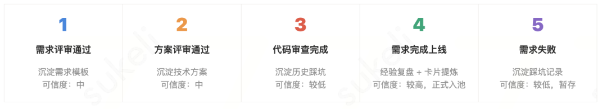
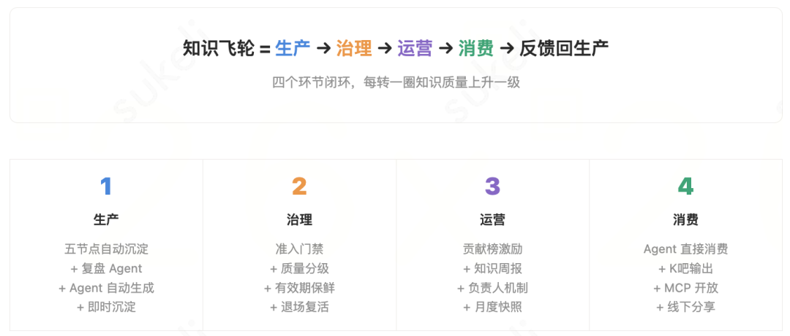

作者：danteyang
当 Agent 成为团队一线生产力，知识供给的问题随之暴露：检索不准、注入低效、过时内容越堆越多。本文记录安全中心团队从定目标、搭体系到跑通知识飞轮的完整过程，包括关键决策背后的思考、踩过的坑，以及可直接复用的方法。当团队开始用 Agent 做研发和运营，一个问题很快浮出来：Agent 的输出质量，直接取决于你能给它什么质量的知识。怎么让知识「产得出、找得准、喂得进、淘汰得掉」，是每个上了 Agent 的团队都要解决的工程问题。本文章是基于团队搭建AI知识体系的实践，写建知识库整个过程的思考、踩过的坑，以及可直接复用的方法。
为什么 AI 时代需要重新建知识库 WHY REBUILD
我们团队以往知识是散落在需求文档、评审记录、代码审查评论、个人经验里。一个新人想搞清楚某个模块的历史决策，得翻 iWiki、问老同事、再去代码仓库刨 commit message，费一两天是常事。更头疼的是，同样的坑不同的人反复踩，因为踩坑经验留在了提 MR 那个人的脑子里，别人根本不知道。
过去知识管理就是「人写 → 人找 → 人读」。
现在 Agent 上了一线，问题变了，不是 Agent 读不了长文（大模型的上下文窗口读两千字毫无压力），而真正卡住的是两件事：
第一，检索精度。你有 2000 篇文档，Agent 面对一个具体问题时，怎么从里面精准捞出相关的那两三篇？纯自然语言写的长文，语义边界模糊，召回容易漂移。
第二，注入效率。就算找对了文档，一篇复盘里可能只有一段结论跟当前场景相关，你不可能每次都把整篇塞进去——token 有成本，上下文也有干扰。
结构化知识（带适用条件、核心结论、应做/不应做的卡片）解决的就是这两个问题。但有一点容易走偏：不要把「给人看的知识」和「给 Agent 看的知识」做成两套东西。好的结构化知识，人打开一样能读懂、能维护——就像写得好的 Skill 文档或 Prompt，人看起来也是清晰的。反过来，如果一条知识人看着都觉得莫名其妙，它的维护质量也不会好，时间一长就腐败了。所以我们的原则是人机共读：一套知识库，人和 Agent 都是消费者。
再加上一个更根本的变化：当 Agent 成为知识的主要消费者后，知识的生产方式、质量标准、分发逻辑都得跟着变。具体来说：
一句话概括：传统知识库是「仓库」，追求存得多；AI 时代的知识底座是「供给系统」，追求匹配得准、注入得快、过时的能自动淘汰。

三大范式转变：从人到流程、从知识到数据、从静态到进化
知识底座为谁服务、装什么、怎么算成功 DEFINE THE SCOPE
做不好知识底座，多数时候不是技术问题，是目标没想清楚。一上来就选工具、搭平台，很可能最后建了个没人用的东西。所以动手前可以先回答以下四个问题：
🎯 问题一：服务什么场景？ 不是「我要建知识库」，而是「我要解决 XX 场景下 YY 效率低的问题」。把目标锚定到业务痛点上。 | 🤖 问题二：谁来消费、怎么消费？ 人和 Agent 往往都是消费者。关键是知识的结构要同时满足：人看着能理解和维护，Agent 检索和注入时精准高效。 |
📦 问题三：知识库里装什么？ 按四层盘点：L1 公共基础 → L2 业务领域 → L3 场景策略 → L4 事件增量。每层明确内容、责任人和保鲜频率。 | 📊 问题四：怎么算成功？ 给出可观测指标：注入命中率、画像覆盖率、盲搜下降率、返工下降率、对话采纳率等。 |
拿我们的 AI 端到端研发平台举例，过一遍四个问题：
服务什么场景？ 端到端需求交付——从需求评审到技术方案到编码到代码审查到上线，整条链路。
谁来消费？ 12 个研发 Agent（需求评审、方案设计、自动开发、代码审查等）是第一消费者，研发同学是审核者和纠偏者，新人也会翻知识库学习历史决策。
装什么？ 技术方案骨架、历史踩坑、需求模板、经验复盘、仓库架构——按知识类型分，跟代码仓库绑定。
怎么算成功？ 需求交付从天级压到小时级，代码审查轮次从 2-4 轮降到 1.1 轮，知识来源 99%+ 由流程自动沉淀而非人手动写。
目标一旦清楚，接下来的设计就顺了。比如「沉淀靠人一定失败」这个判断，直接决定了我们把知识沉淀绑死在研发流程的五个节点上——代码跑过去，知识就自动留下来：

这里设置了个硬规则：没上线或没关联仓库的知识一律暂存，不准进 Agent 的引用池。后续上线了再自动转正。否则这道闸不卡住，知识库很快会被半成品、无效的文档淹没。
💡 迁移建议
你的团队怎么类比
不管做研发还是运营，思路一样：找到你流程里的「必经节点」（提测通过、上线完成、事件关闭……），把沉淀绑上去。让知识成为流程的副产品，别让它变成额外工作。五节点的具体触发时机和沉淀内容可以直接套用上面的表格调整，准入双门禁的逻辑（客观信号验证才入池）是通用的。
目标定完了，聊搭建。
怎么建——六步搭建 AI 知识底座 HOW TO BUILD
别一上来就选工具。我们走下来发现六步比较顺，每步做完有个明确交付物，不容易烂尾。
Step 1：知识盘点——你现在有什么
先盘清家底。按四层分，看看你手上到底有什么：
盘出来就能看到哪里是空白、哪里重叠。我们最终形成了「1+7+N」的结构：1 个 MCP 能力底座、7 个知识库、N 个 Agent 消费者。你的团队未必要搞 7 个库，但分层盘点的方法可以直接复用。

盘点结果：1 个 MCP 底座向上支撑 7 大知识库，N 个 Agent 按需订阅消费
Step 2：选型——你需要什么样的知识库
知识库有三种形态，各有擅长的场景。一个关键经验：别只建一个，组合用。
Step 3：工具平台选择——中台优先 + 适配层
逻辑很简单：有中台用中台，没有再自建。Agent 工具层需要一个适配层，把底层数据能力封装成标准化工具。MCP（Model Context Protocol，模型上下文协议）目前是比较主流的协议。
我们的做法是把平台的底层数据能力（数据库查询、日志检索、模型调用等）按业务域拆成多个独立的 MCP Server。关键设计点：不要把所有工具堆在一个 Server 里——大模型对单 Server 工具数有上限，工具太多会增加 token 消耗，业务之间也需要隔离。拆完之后团队内部的各个 Agent 按需接入，只加载自己需要的那组工具就行，互不干扰。
术语说明
MCP / RAG 是什么？
MCP（Model Context Protocol）：让 Agent 调用外部工具的标准协议，类似 Agent 世界的 USB 接口。RAG（Retrieval-Augmented Generation）：检索增强生成，先搜知识库再让大模型回答。
Step 4：知识生产——四种模式并行
一条铁律：别指望人主动写。四种生产模式可以并行跑：
⚙️ 模式 A：绑定流程自动沉淀 知识生产绑定在研发/运营的关键节点上，零人工操作。实践数据：99.7% 知识由流程自动沉淀。 | 🔄 模式 B：复盘 Agent 驱动更新 Agent 每周分析会话记录，未命中的盲点自动变 Git MR。用户每次对话都是知识质量的隐式检验。 |
🤖 模式 C：Agent 自动生成 运营输入事件背景，Agent 自动转化为结构化知识 + 准召评估。知识上线周期从天级降到 30 分钟。 | ⚡ 模式 D：运营处置即时沉淀 处置新事件的同时沉淀规则，下一个类似事件 Agent 立即能用。最短 2 小时完成入库。 |
Step 5：知识治理——有进有出才能保鲜
只进不出的知识库三个月就成垃圾场。治理要做四件事：
准入双门禁：已上线 + 已关联仓库才能正式进入 Agent 引用池。三层质量分级：可直接使用 / 待确认 / 待验证，按可信度自动划分。有效期保鲜：默认 90 天到期重校验，过期且零引用自动归档。自动退场 + 复活兜底：零引用过期的归档，仍有引用或被点赞的自动复活——防止误杀有价值知识。
我们跑了几个月的实际数据：已归档 101 条，清理候选 11 条，过期治理完成率 90.2%。基本不需要人盯着，系统自己会代谢。下面是治理工作台的实际界面——知识 Owner 可以看到待审核、即将过期、待完善的知识，人工只需集中精力在高价值复核上：

治理工作台：系统自动识别待审核、即将过期、待完善的知识，人工只做高价值复核
Step 6：分发与消费——让知识找到使用者
最后一步：把知识送到该去的地方。传统做法靠 Agent 自己搜，搜不到就白搭。我们换了个思路，平台主动注入：Agent 启动任务前，系统已经按场景把相关知识打包好塞进去了。
目前 12+ 个 Agent 各有各的知识订阅。需求评审 Agent 只看需求模板和历史踩坑，舆情 Agent 只看判定标准和 bad case 规则。知识包是分发的容器（已有 40 个），分仓库专属包和公共包两种，不撒网式推送。

12+ 专用 Agent 覆盖需求全生命周期和运营全场景，每个 Agent 消费特定知识库 + MCP 工具
⚠️ 哪些能直接搬、哪些需要定制
可直接复用的：四问定目标的框架、五节点绑流程的思路、准入双门禁（客观信号验证才入池）、三层质量分级、有效期 + 退场复活机制、知识包作分发容器、注入即记账。需要因地制宜的：具体触发节点要换成你业务的关键流程节点；知识卡片的字段结构要根据你的 Agent 消费场景设计；MCP 工具拆分取决于你的业务域划分；保鲜频率（我们默认 90 天）要按你的知识更新速度调整。
让知识转起来的飞轮 THE FLYWHEEL
建好知识库是第一步。让它自己转起来才算真跑通：交付越多 → 知识越厚 → Agent 越强 → 交付更快。这个循环一旦启动，团队的能力是随使用量一起涨的。


知识飞轮六环节：生产 → 提炼 → 注入 → 消费 → 反馈 → 保鲜，形成自增强闭环
飞轮能转下去，靠的是几个设计上的巧劲：
「用即积累」。例如 安全中心综合问题问答机器人 O3 Buddy 的复盘 Agent 每周扫一遍会话记录，碰到回答不了的问题就自动提 Git MR 补知识。用户的每次对话实际上都在帮知识库查缺补漏，6 月跑下来月均 1,097 条对话，采纳率 92%。
「注入即记账」。每条知识被谁用了、用了几次，系统自动记录，不靠人填报。哪些知识是热门、哪些从来没被翻过，打开看板一目了然。
「敢于不沉淀」。很多需求做完其实没什么值得沉淀的东西，系统会判断跳过。通过异步蒸馏判断的方式降噪，减少知识内容产生，知识库的密度比体量重要。
运营侧还有个问题：怎么让人愿意参与？我们试下来最有效的办法不是通过管理手段强制让大家贡献知识，是通过建设工具，让知识沉淀这个事情本身，让人感觉不到额外工作量，比如在完成一个需求的端到端开发，期间人与AI对话交互的过程中被动的就会沉淀下知识，并自动归到对应的人身上，而且我们也会生成对应的知识贡献榜，相关贡献数据也可以直接写进自评，但这些是锦上添花，核心还是流程自动化把活干了。
知识贡献榜：

下面这张飞轮看板是我们日常运营的实际工具——知识规模、质量、时效、AI 调用效果四个维度一屏可见，所有数据由「注入即记账」机制自动产生：

飞轮运营看板：知识规模/质量/时效/AI 调用四维度实时可观测，所有数据自动产生
避坑指南——4 条反模式：
| ✕ 强压 KPI 逼贡献 人被逼写的知识质量低、维护意愿更低 → 流程自动沉淀为主，激励为辅 | ✕ 只进不出无限膨胀 知识越堆越多，信噪比越来越低 → 有效期保鲜 + 自动退场复活 |
| ✕ 隐性知识无法显性化 专家离职带走了全部 know-how → 复盘专项 + 换岗交接清单 + 专家萃取 | ✕ 贡献者与组织权责不对等 写了很多但没人认可，动力自然消退 → 贡献榜量化 + 自评可引用 + 管理者考核参考 |
跑起来之后，变化在哪里 WHAT CHANGED
做了知识系统的建设后，变化在哪里，简单说：让人避免再干重复检索、重复踩坑的活，腾出来去做更多的决策判断和创造。
具体来看有四层价值：
🧠 组织记忆 人员流动不再带走关键知识。11+ 篇故障复盘成为「错题本」和行动标尺，新来的人能站在前人肩膀上。 | 🚀 新人加速 三阶段培养体系：入门期 → 成长期 → 产出期。新人上手从 30 天压缩到 10 天。 |
⚖️ 知识平权 不管在哪个小组、入职多久，Agent 能获取的知识是一样的。减少「问对人才能拿到答案」的信息不对称。 | ♻️ 自增强飞轮 使用越多 → 知识越厚 → Agent 越强 → 产出越高 → 更多人愿意用。这是一个持续加速的正循环。 |
落到数字上：需求交付从天级压到小时级，代码审查从半小时到两小时降到平均 3.4 分钟，舆情巡检团队已经取消了通宵班，风险事件日处置量从 400 条涨到 1,200 条。
更关键的是需要让这套体系在持续运转，不是搞了一次「知识运动」就静止不动了：
人的角色变了。不是知识的搬运工了，是知识质量的把关人。Agent 干重复的 80%，人做判断和纠偏的 20%。成员的心智负担很低：正常做需求、正常上线，知识沉淀就跟着完成了，不需要额外「写文档」这个动作。
如果团队区建设知识体系，建议可以从一个具体场景的闭环切入，别贪全。跑通一个再横向扩展。飞轮开始转比转得快重要。